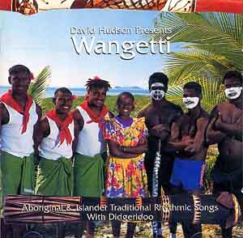

オーストラリアの暑い北国に位置する島々の音楽です。隣のパプアニューギニアでも 同じ様な音楽があるようです。半世紀前にそこで戦って生還し、「パプアニューギニア ・南十字星の下で」を著した著者がこの音楽を聴いて懐かしんでいます。 トロピカル気候の浜辺に椰子の木が茂り、青い空に珊瑚礁の海岸で寝そべりながら聞く 状況をこの音楽を聞きながら豊かに想像され、リフレッシュされます。 国内での入手は残念ながら難しいと思われます。